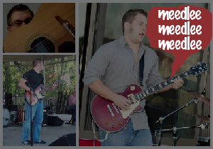

I believe the most effective method for improving one's abilities in a certain area is to use them. For instance, I am really good at rambling on incessantly, because I am always rambling on incessantly. So, instead of wishing I were better at writing songs, or better at recording songs, or better at performing songs, I'm going to actually do those things, and post the songs here. If you listen, I would appreciate it if you emailed me your thoughts.
-
All Gone
I decided to record my guitar by miking an '83 Fender Champ. I really liked it in this setting. I used an app called DoggieBox for the drums. I thought the vocals sounded okay, until I played them through my laptop speakers instead of with the studio headphones. Ugh. Those speakers seem to favor my voice above everything, making the slightly-off-tunedness much more noticeable. I need lessons. ... Ultimately, I am fairly happy with the song, though. (I recommend you listen via headphones.)
-
My Soul for Water
Not my first shot at writing a song ever, but my first shot at recording a "full song" by myself. I use my acoustic guitar, my bass, and my voice. I think "voice" is the instrument in need of the most practice, unfortunately. By the way, the percussive sounds were created by either banging on the body, or raking the strings, of my acoustic.